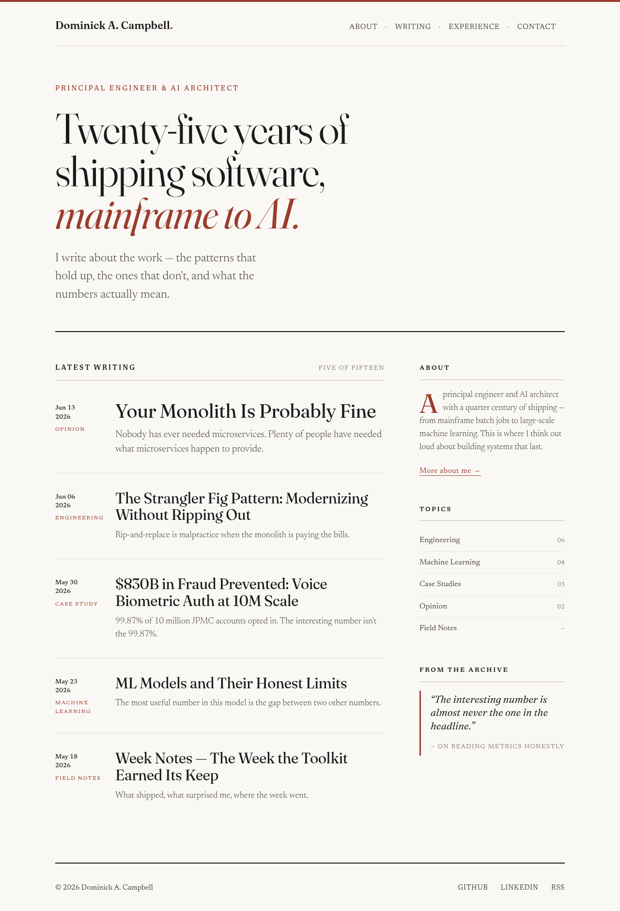
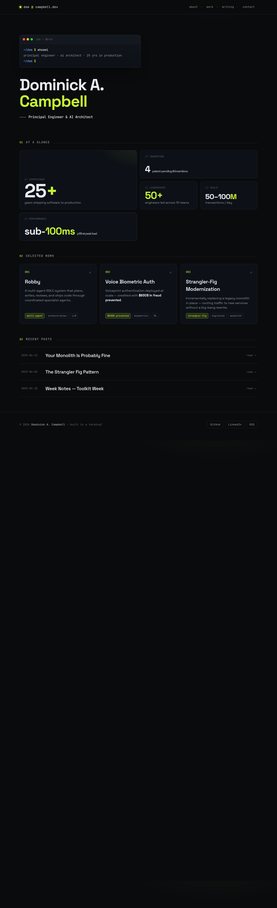
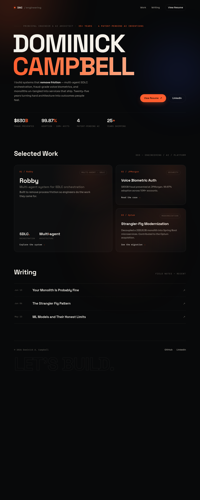
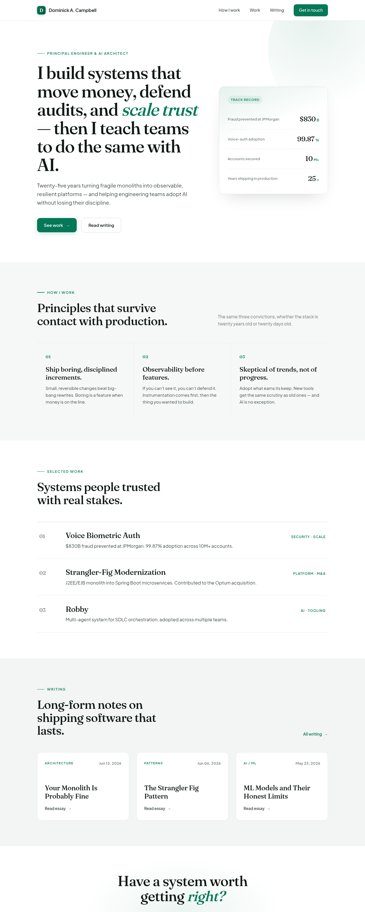
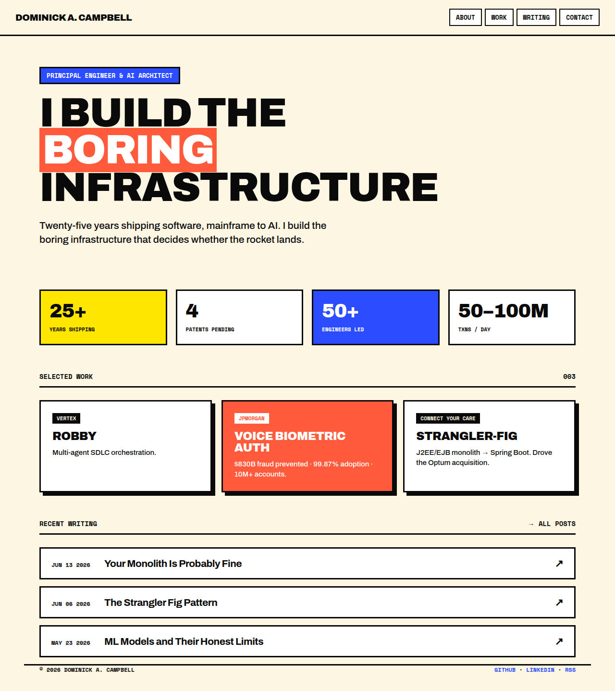
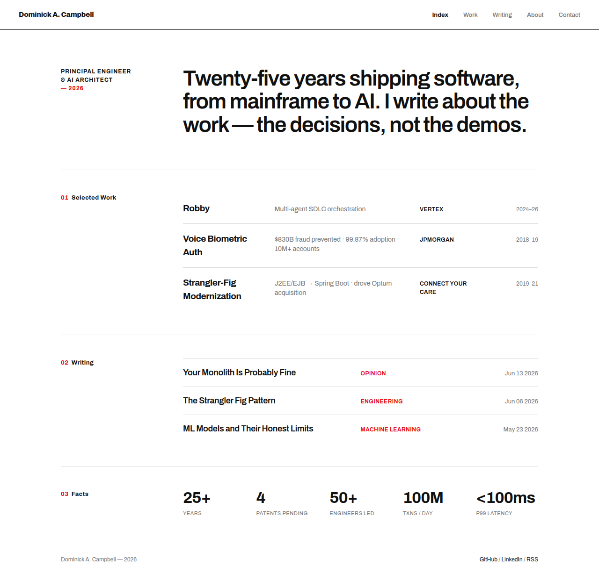
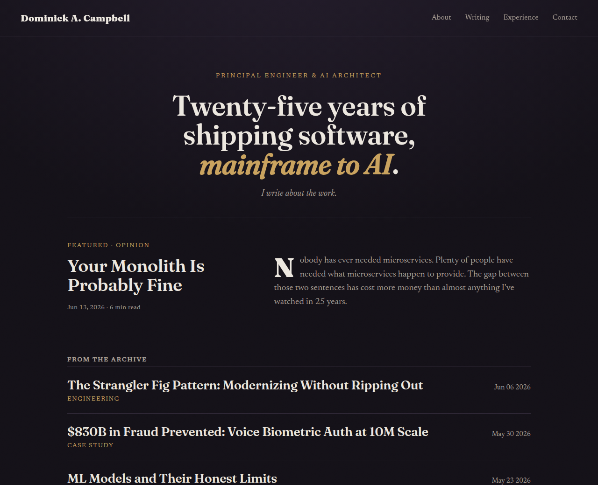
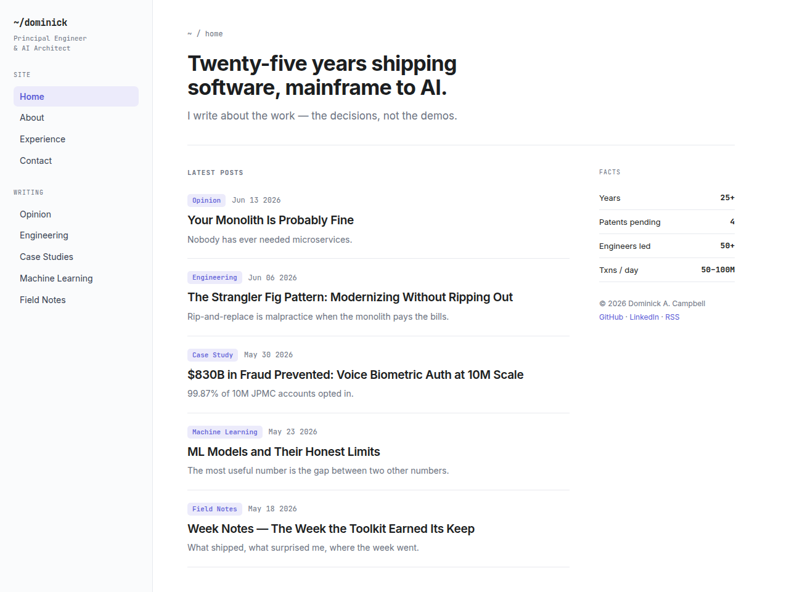

Mockups built with your real content. "open live HTML" = interactive version with real fonts/hover. Nothing here is on the live site.
1 · Editorial Minimal (writing-first)
Magazine/print. Fraunces serif + oxblood on warm paper. Blog is the product.
▶ open live HTML
2 · Dark Terminal / Mono-accent
Near-black, electric-lime, JetBrains Mono, bento metrics, terminal hero.
▶ open live HTML
3 · Polished Portfolio + Motion
Name-as-art hero, aurora glow, molten-orange, work tiles front.
▶ open live HTML
4 · Clean Light Editorial-Corporate
Light, airy, full-width bands, deep-green, Fraunces + Plus Jakarta. High-trust.
▶ open live HTML
5 · Neo-Brutalist
Thick borders, hard offset shadows, chunky Archivo, blue/coral/yellow on cream. Bold.
▶ open live HTML
6 · Swiss Grid / Typographic
Strict 12-col grid, numbered sections, Swiss red, tabular metadata. Precise.
▶ open live HTML
7 · Moody Editorial Dark
Premium magazine, but dark. Charcoal + gold Fraunces serif, drop cap, grain. Foucault-style.
▶ open live HTML
8 · Docs / Dev-clean Sidebar
Fixed left sidebar, grouped post index, right facts rail. Inter + JetBrains Mono. Built for many posts.
▶ open live HTML
Thumbnails cropped to ~520px tall. Open the .png or live .html for the full page.